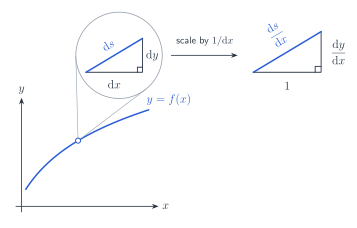

Review: Full Frontal Calculus
computation
math
review
Retrieval practice hints for Full Frontal Calculus (1st ed.) by Seth Braver
Chapter 5: The Integral Calculus Proper
Algebraic Trickery (Rational Functions)
Antiderivative of \(\frac{1}{x}\)
\[ \int \frac{1}{x}\ dx = \ln{|x|} + C \]Antiderivative of \(\sec{(x)}\) and \(\csc{(x)}\)
\[ \begin{align} \int \sec{(x)}\ dx &= \ln{|\sec{(x)} + \tan{(x)}|} + C \\ \int \csc{(x)}\ dx &= -\ln{|\csc{(x)} + \cot{(x)}|} + C \end{align} \]Trigonometric Trickery (Part 1)
Pythagorean identities
\[ \begin{align} \sin^2{x} + \cos^2{x} &= 1 \\ \sec^2{x} - \tan^2{x} &= 1 \end{align} \]Double-angle identities
\[ \begin{align} \cos{(2x)} &= \cos^2{x} - \sin^2{x} \\ \sin{(2x)} &= 2\sin{x}\cos{x} \end{align} \]Trigonometric Trickery (Part 2)
Trigonometric substitution
We replace \(x\) with a trigonometric function to complete the square and thus get rid of the square root. The Pythagorean identities are the squaremakers.- For \(\sqrt{\text{constant} - \text{square}}\), we use: \(\sin^2{\theta} + \cos^2{\theta} = 1\). For example, with \(\sqrt{9-x^2}\) our substitution is \(x = 3\sin{\theta}\) which transforms the expression into \(\sqrt{(3\cos{\theta})^2}\).
- For \(\sqrt{\text{square} + \text{constant}}\), we use: \(\sec^2{\theta} - \tan^2{\theta} = 1\). For example, with \(\sqrt{x^2+16}\) our substitution is \(x = 4\tan{\theta}\) which transforms the expression into \(\sqrt{(4\sec{\theta})^2}\).
- For \(\sqrt{\text{square} - \text{constant}}\), we use: \(\sec^2{\theta} - \tan^2{\theta} = 1\). For example, with \(\sqrt{x^2-3}\) our substitution is \(x = \sqrt{3}\sec{\theta}\) which transforms the expression into \(\sqrt{(\sqrt{3}\tan{\theta})^2}\).
Integration by parts
It falls out from the product rule of derivatives.Say \(u\) and \(v\) are two functions of \(x\). Then by product rule: \[ \frac{d}{dx}(uv) = \frac{d}{dx}(u) \cdot v + u \cdot \frac{d}{dx}(v) \\ \]
\[ \begin{align} \text{Integrating both sides:}&\\ \int \frac{d}{dx}(uv)\ dx &= \int \frac{d}{dx}(u) \cdot v\ dx + \int u \cdot \frac{d}{dx}(v)\ dx \\ uv + C &= \int \frac{d}{dx}(u) \cdot v\ dx + \int u \cdot \frac{d}{dx}(v)\ dx \\ \text{Rearranging and absorbing }C&\text{ inside the right-side integral:}\\ \int u \cdot \frac{d}{dx}(v)\ dx &= uv - \int \textcolor{blue}{\frac{d}{dx}(u)} \cdot \textcolor{green}{v}\ dx \end{align} \] Final equality is the integration by parts. We just need to imagine our integral as a product like \(\left(u \cdot \frac{dv}{dx}\right)\) where finding \(\textcolor{blue}{\frac{du}{dx}}\) and \(\textcolor{green}{v}\) is easy (and that we transition into a simpler integral than the one we started with).\[ \begin{align} \int x \cos{(x)}\ dx \xlongequal{\text{imagine...}} \int \underbrace{x}_{u} \cdot \overbrace{\cos{(x)}}^{dv/dx}\ dx &= \underbrace{x}_{u}\cdot \overbrace{\sin{(x)}}^{v} - \int \underbrace{1}_{du/dx} \cdot \overbrace{\sin{(x)}}^{v}\ dx\\ &= x\sin{(x)} + \cos{(x)} + C \end{align} \] Note, the intermediate integral \(\int 1 \cdot \sin{(x)}\ dx\) is simpler than our original integral \(\int x\cos{x}\ dx\).
Chapter 6: Odds and Ends
Arc Length
Zoom in enough and the curve, conveniently, becomes a straight line …